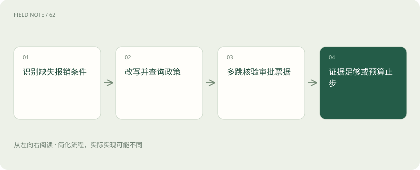

先读哪些知识
先用一个类比理解
类比只帮助建立直觉，不等同于技术的完整机制。
一图看懂

固定两步的基线
报销助手回答“出差住宿上限多少”，固定检索再生成通常足够。两步 RAG 把检索时机写入流程，容易控制延迟与验证。Agentic RAG 则允许运行中决定是否检索、改写或调用其他工具；灵活性来自决策空间增加，也同时增加错误路线与预算风险。
保留固定路径还能作为回归参照：当代理异常绕路时，比较它是否偏离本可一次检索解决的事实。代理能力应由复杂任务收益证明，不能以调用工具次数更多作为成功指标。
把问题改成决策
“这张酒店发票能报吗”缺少城市、日期和职级。先确定缺失字段，再选择询问用户或查询获授权的资料。不能用相似文档猜用户职级。路由器应输出可检查的目标，例如查当前住宿政策、核验发票日期，而不是笼统地“继续深入思考”。
一个可操作的决策表把字段分成必需、可从授权系统读取、必须问用户三类。发票日期可识别，私人旅行目的未必能推断；缺失条件影响规则选择时应先补齐。
改写要保留约束
用户问深圳九月住宿，查询改写不能丢掉深圳和生效日期。可以补充同义词“住宿标准”，但要保存原问题与每轮改写，比较召回变化。出现旧版政策时优先纠正时间过滤，反复换说法可能让语义更相似却离业务条件更远。
记录改写前后的硬约束集合。如果“九月”被改成“最新”，就已改变问题含义。可让检索工具显式接收城市和日期字段，减少自然语言改写把这些约束悄悄丢掉的机会。
图解：可中止的检索反馈
多跳要有连接键
先查员工职级，再查对应城市标准，最后核对例外审批，三步之间用明确的员工标识、政策版本和审批编号连接。第二跳不能根据第一跳的自然语言猜另一个人。每步记录输入事实来自何处，防止第一步错误被后续步骤放大成看似完整的论证。
例如员工信息返回P6，而政策表使用管理序列M级，系统必须找到正式映射规则，不能凭字面把P6当成第六档。多跳失败常在连接条件，而不在某一次搜索是否成功。
工具结果需要验证
政策检索返回的是文字证据，票据工具返回结构化字段，两者可信边界不同。检查日期单位、币种、返回状态和权限；空结果不能解释成“不允许报销”。工具超时应保留未核实状态。模型提出调用只是一项请求，真实执行与结果确认由运行时完成。
发票金额识别为800时还要检查小数点与币种。工具返回“无匹配”可能意味着图片模糊，不能等价转换为票据造假；不同失败状态应传给后续节点，避免语言总结抹平差异。
循环里的增量标准
第二次检索应回答明确缺口，例如是否存在深圳特殊活动标准。若只是再次搜“住宿上限”，且新增文档没有改变证据集合，就没有有效进展。可用未解决问题数、独立证据新增数和约束覆盖衡量进展；这些是工程规则，不能靠模型自称有信心代替。
可把已查政策版本和已解决字段保存在状态中，再次请求相同资料时要求说明新增目标。这是本文建议的循环治理方式，不是所有Agent框架都会默认实施的内置机制。
停止与费用失败
为一次咨询设置最多三轮检索、一次票据核验与总时间上限，这是教学示例而非通用推荐值。达到证据充分条件就回答，达到预算而仍有缺口就给有限结论并列明缺口。不能让工具失败触发无限重试，也不能把预算耗尽包装成政策不支持。
失败路径还要区分不可重试的权限不足和可重试的临时超时。前者重复调用只浪费费用，后者也应受总截止时间限制；已经超出用户等待窗口就不应再开启新的昂贵分支。
图解：多跳连接的约束
与基线做反事实比较
拿相同政策题比较两步流程与 Agent 流程，统计额外调用是否实际解决例外条件。若简单题成本上升而正确率没改善，可把明确事实题保留固定路径，把跨系统核验题交给决策流程。评价完整轨迹中的错误工具、无效重写和过早停止，而非只看最终文风。
测试集中应有政策不存在、职级不明确、例外审批被撤回三种情况。理想行为不总是给出确定报销结论；正确索取信息与明确未核实，同样比凭空肯定更符合任务目标。
放在一起对比
| 对象或路线 | 处理依据 | 适用边界或检查点 |
|---|---|---|
| 两步RAG | 固定先检索后回答 | 简单政策题 |
| 改写 | 保留城市日期职级 | 术语不匹配 |
| 多跳工具 | 明确连接键 | 政策与审批联合核验 |
| 停止 | 充分证据或预算到限 | 未决项必须披露 |
放进真实场景
发票显示深圳800元，但职级字段为空。代理先询问职级，再查九月有效标准；如果审批工具超时，输出“普通标准已核实、例外审批未核实”，而非直接判不予报销。
别踩这个误区
想一想
怎样区分有价值的下一跳与无效循环？
下一跳必须填补一个明确缺口并带来新的适用证据；重复查相同版本又不减少未决条件，应停止或换成请求信息。
关联阅读
资料与边界
本文为原创知识讲解。类比和图示经过简化；示例数字不代表实测或报价。整理日期：2026-11-05。文末列出对应技术的原始资料，具体功能与版本支持请以原文为准。